como preparar un coctel
Igual que en otros muchos campos, la práctica hace también aquí al
maestro y con este propósito deseamos ofrecer a los aficionados
algunas reglas de oro:
- Utilicen siempre ingredientes de primera calidad
El resultado final de todo combinado lo determina el producto de
inferior calidad.
- Los experimentos están reservados única y exclusivamente a los
expertos
Los novatos se deben abstener de mezclar arbitrariamente las bebidas
que se nos ocurran o modificar las recetas. Todo ello redunda en
perjuicio del combinado final y es, además, una de las causas que
han ayudado a extender la idea de que los cócteles se suben
enseguida a la cabeza produciendo después una resaca sumamente
desagradable.
- Cuanto menor sea el número de invitados más generosos pueden
mostrarse con el hielo
Cantidades
Tanto el exceso como el defecto de un determinado ingrediente modifica el sabor
del combinado y en la mayoría de las ocasiones el resultado es más negativo que
positivo.
Las proporciones de los ingredientes líquidos se indican por partes. Una parte
estándar corresponde a unos 25-30 ml de líquido. Un chorrito es la cantidad de
líquido vertida al inclinar una botella con un movimiento rápido.
Utensilios
| 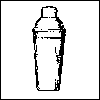 |
Coctelera : los muy expertos prefieren la coctelera de
dos cuerpos que se superponen al juntarlos.
Para los principiantes es adecuada una coctelera con vaso, cubrevaso con
colador incorporado y tapadera. Si no dispone de coctelera utilice un bote
con tapa de rosca de cuello ancho. |
| 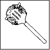 |
Colador con gusanillo: se utiliza al traspasar las bebidas de la coctelera
a la copa para evitar que el hielo y la fruta caigan en el mismo. Los
mejores coladores están hechos de acero inoxidable y tienen el aspecto de
una cuchara plana con agujeros. |
| 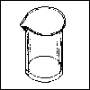 |
Vaso mezclador: se utiliza para mezclar tragos largos; es un vaso alto,
cilíndrico, como una jarra pequeña sin asa. |
| 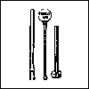 |
Batidora : sirve para dar volumen a los cócteles |
Otros accesorios útiles: cucharilla de mango largo, cucharilla de café,
cucharilla de mesa, medidor, cubiletero y pinzas, sacacorchos, abrebotellas,
tabla de cortar, cuchillo de mondar, exprimidor, paño, palos de cóctel,
palillos, pajitas, mezcladores y trituradora de hielo, en su defecto puede
utilizarse un rodillo de cocina. Un cuchillo cortaverduras o un cuchillo para
preparar decoraciones de fruta y verduras con mango y una circunferencia de
metal con una incisión afilada.
Copas
| 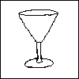 |
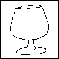 |
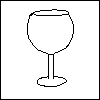 |
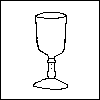 |
| Copa de cóctel o de Martíni. |
Copa de coñac. |
Copa de vino |
Vaso de licor |
 |
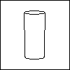 |
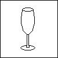 |
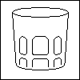 |
| Vaso alto |
Vaso mediano |
copa de champán |
Vaso ancho o de whiskey |
PREPARACIÓN
Se remueven todas aquellas bebidas que contienen ingredientes muy fluidos o que
se mezclan con facilidad. Las bebidas no se remueven como el azúcar del café,
sino con movimientos mucho más rápidos y violentos para lo cual se precisa un
vaso mezclador y una cucharilla de mango largo. Los movimientos deben describir
una espiral y se empezará siempre de abajo a arriba. Como la bebida se suele
preferir lo más fría posible, pero sin aguar demasiado, procederemos de la
siguiente manera: primero se pone el hielo en el vaso mezclador y después de
preparar todos los ingredientes se quita el agua que haya soltado el hielo; a
continuación se echan esos ingredientes en el vaso, se remueve vigorosamente la
mezcla durante 20 segundos y sin dejarla reposar se vierte en una copa de
cóctel. El agua mineral, al soda y el agua tónica se añaden directamente en el
vaso donde se sirve la bebida.
Otras muchas bebidas se agitan. El proceso es similar al ya citado: poner los
cubitos de hielo en la coctelera, preparar los ingredientes, quitar el agua
derretida, echar los ingredientes, tapar la coctelera y envolverla con una
servilleta. Ahora viene lo más importante: sujetar la coctelera con ambas manos,
subirla hasta la altura de los hombros, como si se tratara de una trompeta, y
agitarla con movimientos rítmicos seguidos, breves violentos y horizontales,
hacia delante y hacia atrás tomando siempre como referencia el propio cuerpo. De
este modo el cóctel se enfría uniformemente y los ingredientes se mezclan como
es debido. Por regla general, los cócteles se agitan entre 10 y 20 segundos,
aunque este tiempo puede aumentarse. Cuando la coctelera comienza a helarse por
la parte exterior, el cóctel está ya suficientemente frío y deberá servirse
inmediatamente para evitar que el hielo y la fruta se derrita.
El escarchado consiste en humedecer con zumo de limón el borde del vaso del
cóctel para que quede adherido bien azúcar bien sal en otros cócteles.
Subir